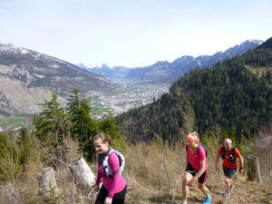
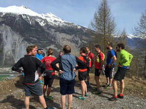

Alpinrunner
Trainingslauf zum Trail Run HTW Chur
Streckenbesichtigung zum 1. Trailrun Chur vom 10. Juni
Wir bieten die Möglichkeit die Strecke als Trainingslauf zu besichtigen.
Treffpunkt Strecke Uphill/UFFA/LANGA : 8.00 Uhr Alexanderplatz Chur, Marco zeigt dir die gesamte Strecke
Treffpunkt Strecke Panorama/OBA : 10.00 Uhr vor Viva- Bergbaiz Brambrüesch, (9.30 Uhr Brambrüeschbahn Chur)
Wir starten in Chur auf der Originalstrecke und laufen die gesamte Strecke, oder du kommst mit der Brambrüeschbahn hoch und läufst die Panoramastrecke OBA.
-

-
